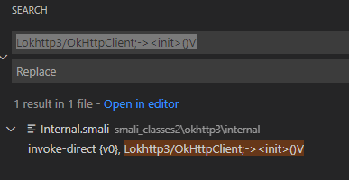
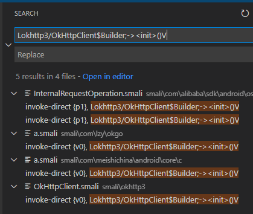
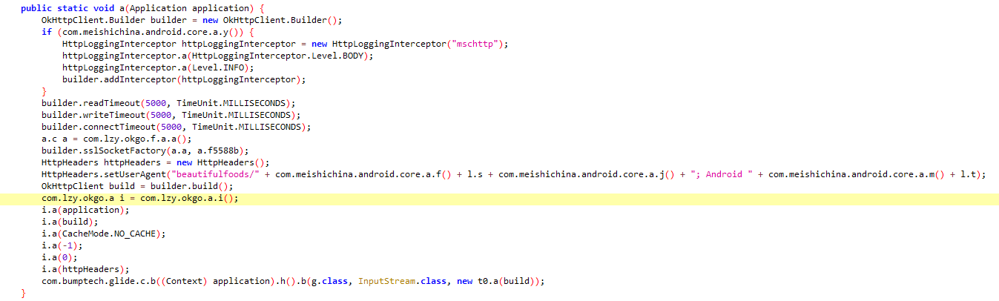
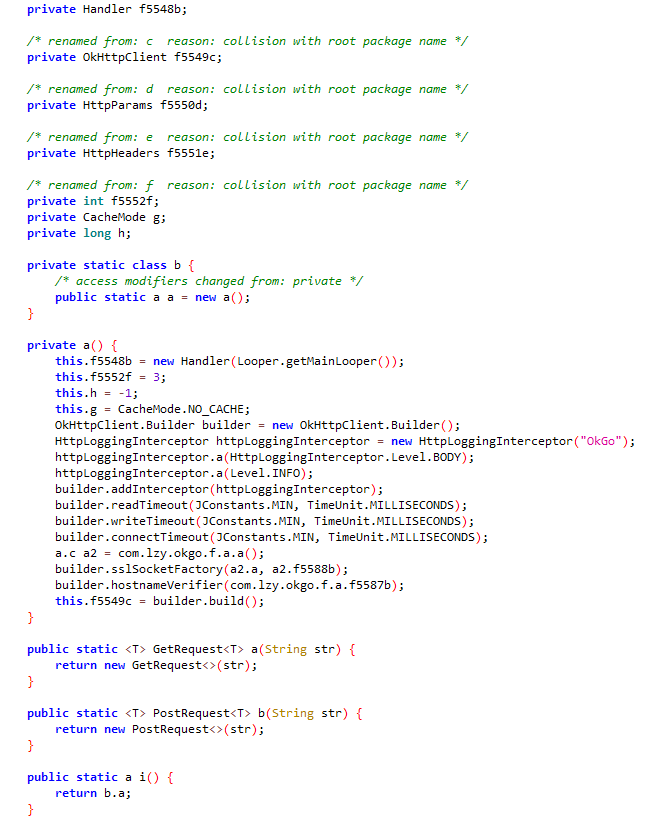
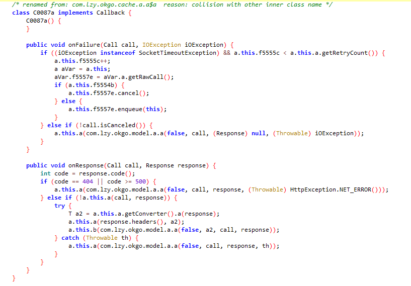
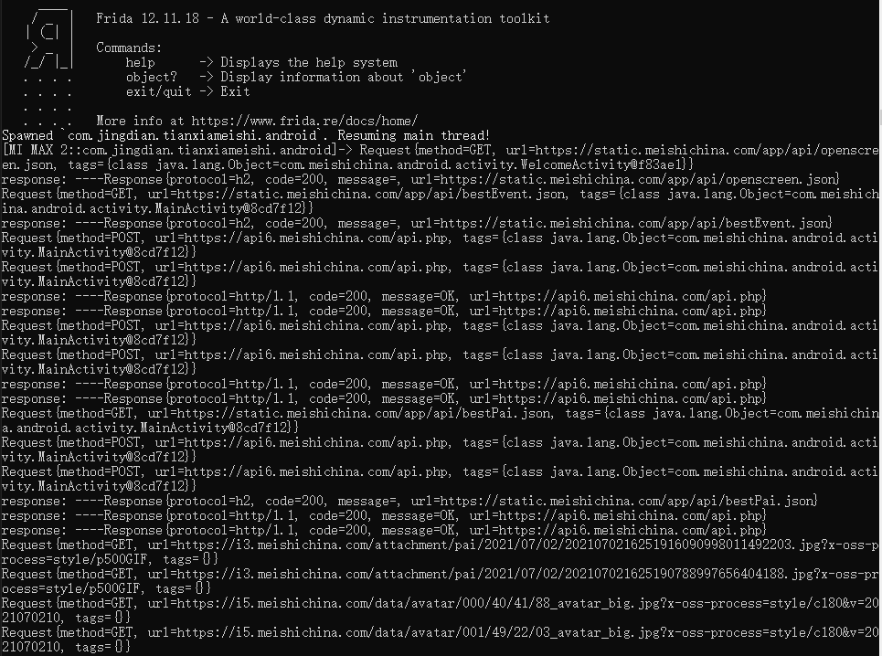
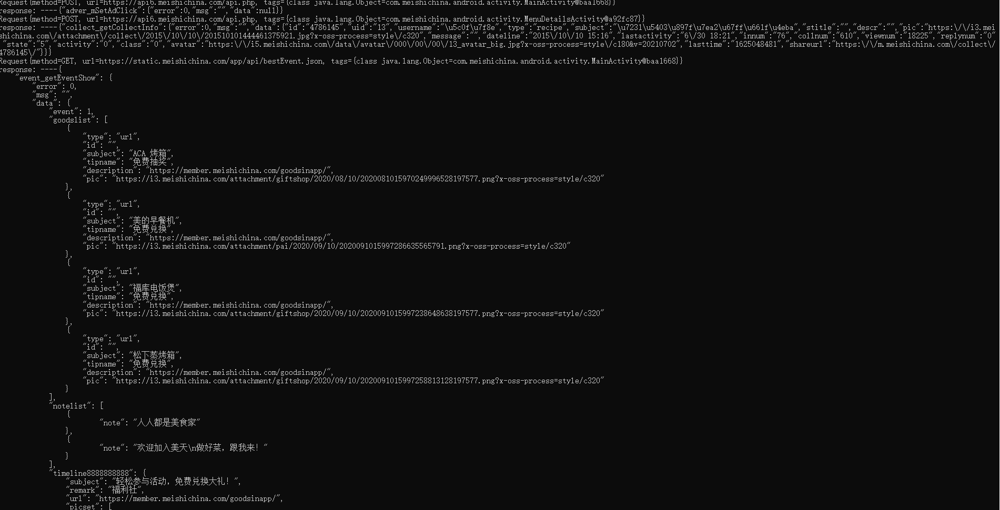
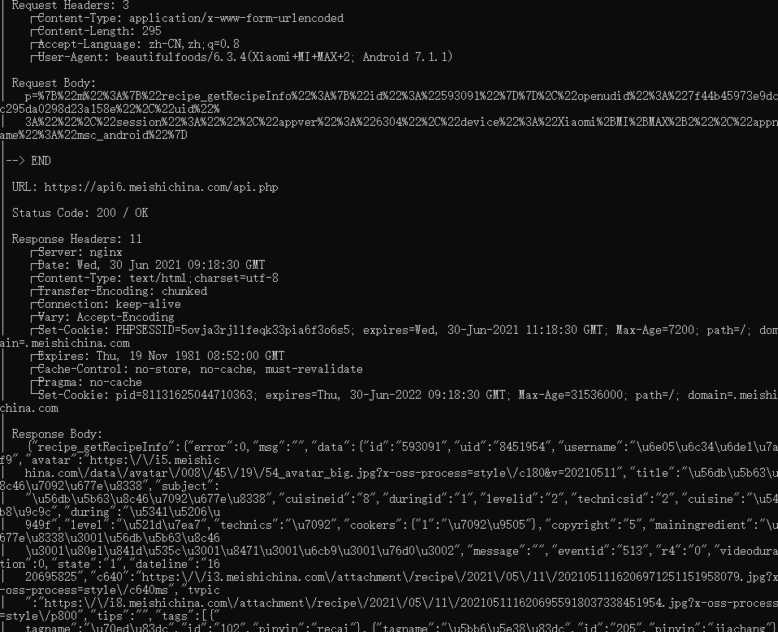

Frida Hook详细使用方法可以参考：
【1】Frida Java Hook 详解（安卓9）：代码及示例（上）
【2】Frida Java Hook 详解（安卓9）：代码及示例（下）
讲的相当详细，包括拦截普通方法、构造方法、重载方法、构造对象、内部类方法、修改成员变量和方法返回值等。
本次实验尝试hook常见的网络通信框架okhttp3。
还是上次的app，首先用apktool反编译，方便搜索关键字，用jadx直接搜索会崩溃。
使用okhttp3通信，首先需要初始化OkHttpClient，Java语句为以下两种，分别为默认配置和自定义配置：
1 | OkHttpClient client = new OkHttpClient(); //默认配置 |
1 | OkHttpClient client = new OkHttpClient.Builder() // 自定义配置 |
搜索app中初始化OkHttpClient的地方，打开反编译后的app目录，搜索以下语句：
Lokhttp3/OkHttpClient;->
()V Lokhttp3/OkHttpClient$Builder;->
()V
结果如下图所示：


可以看到app主要使用了自定义方法初始化OkHttpClient。选择com.meishichina.android.core.c.a，在jadx中打开。可以看到，在方法a中初始化了OkhttpClient对象，并将其传入com.lzy.okgo.a类的对象中。

打开com.lzy.okgo.a类，发现它包含了OkHttpClient、HttpParams、HttpHeaders等属性，且该类为单例模式。

在a()方法中配置了Request对象。继续搜索，发现在com.lzy.okgo.request.base.Request。getRawCall()中，调用了该Request对象的newCall()方法。然后，找到enqueue请求队列的callBack接口为okhttp3.Callback，其实现在com.lzy.okgo.cache.a.a$C0087a。

以上还原了这个测试app中使用okhttp框架进行通信的过程。我们hook的时候不需要这么复杂，直接找到okhttp3.OkHttpClient.newCall就可以得到请求的内容，同理，hook callback实现的onResponse就可以。
request:
1 | var OkHttpClient = Java.use('okhttp3.OkHttpClient'); |
response:
1 | var callback = Java.use("com.lzy.okgo.cache.a.a$a"); |
这里在执行完原onResponse方法后，调用了原框架中response.toString()的代码。
1 | public String toString() { |
由于responseBody已经从数据流中输出了，这里获取response.body()的话是空的，打印出来的信息有限，结果如图所示：

若在执行原onResponse方法前就调用response.body().string()，就可以获取responseBody的详细信息，但是也会导致app获取到的信息为空。

在GitHub上面找到了一个博主开发的Frida工具，能够实现okhttp网络通信内容拦截，同时不影响app运行。其主要逻辑在dex文件中，需要将dex文件导入到设备中，再通过Frida远程调用dex中的接口。!
